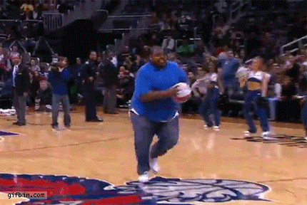
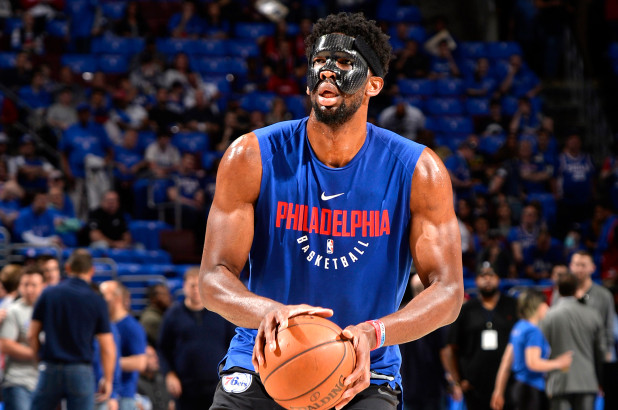
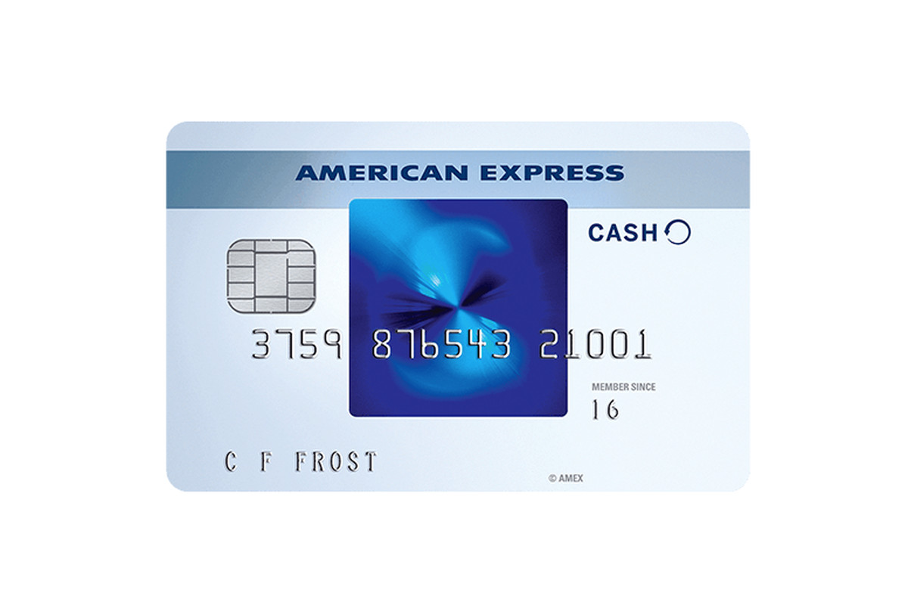
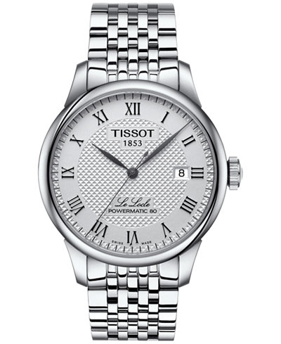

Basketball Fails and Other Stuff

As you can see, this guy is trash. He throws it way too hard and falls on his face. I wish the mat wasn't there. On the MBI scale he is obviously over 30. Here is another failure who tries to dunk it but fails. He is also over 30 on the MBI scale.

It it pretty clear this kid has anger issues after he misses two dunks and a layup. He kicks the basket and it bounces back and hits him in the face. hahahahahahahahhahahahahaaha L L L L

Giannis Antetokounmpo(below) has some rather large hands. As you can see, he is next to a person who doesn't know how to shave.

Joel Embiid has to wear a mask because he had a broken eye socket.

this presentation is brought to you by wingstop, the official wings of the warriors
this presentation is brought to you by american express, the official card of the nba

this presentation is brought to you by tissot, the official time keeper of the nba
